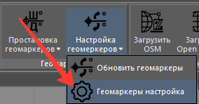
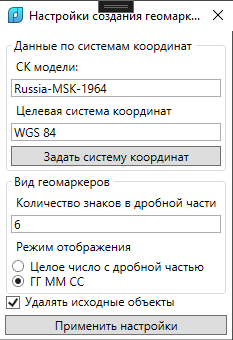
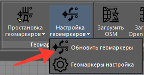
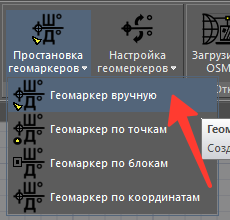
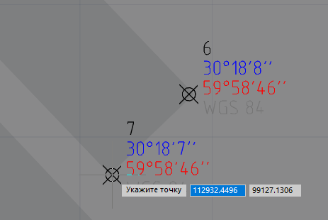
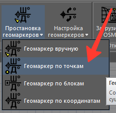
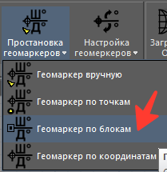
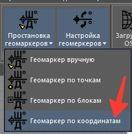

Работа с геомаркерами
Геомаркеры - это блоки с атрибутами, содержащими информацию, о координатах точки вставки блока в целевой системе координат с выбранными настройками отображения.
Определение блока геомаркера хранится в файле Resources\auxDWG\TBS_GIS_GeoMarker.dwg во вложенной папке папки приложения (по умолчанию C:\Program Files\TBS\TBS GIS). Если по данному пути файл не был найден, то функции работать не будут. Вы можете отредактировать определение блока, если желаете, чтобы его объекты были на других слоях, главное, не удаляйте и не переименовывайте имеющиеся атрибуты блока "TBS_GIS_GeoMarker".
Команда "Геомаркеры настройка" (TBS_GIS_Geomarkers)

Запускается модальное диалоговое окно, с настройками, которые применяются для вновь создаваемых геомаркеров.

В настройках задается целевая система координат (ту, в которую пересчитываются плановые координаты XY точек вставки блоков с отображением результатов в полях "X_LONG_COORD", "Y_LAT_COORD" соответственно).
Возможно задать отображаемую точность цифр. В случае представления результата в формате числа с дробной частью хватит 3 знаков, если целевая СК обычная типа "projected"; в случае пересчета в геодезическую СК точность надо указывать от 6 до 8 знаков. Если формат отображения указывается как ГГ.ММ.СС (градусы, минуты, секунды), то количество знаков можно оставить 0..2. Этот формат отображения целесообразен только для геодезических СК, для обычных "projected" он не имеет смысла.
Удалять исходные объекты - флаг, если true, то при вызове функций TBS_GIS_Geomarkers_ByPoints или TBS_GIS_Geomarkers_ByBlocks исходные объекты будут удалены.
После "Применения настроек" они будут использоваться для всех новых создаваемых маркеров, а также к старым при вызове команды TBS_GIS_Geomarkers_Update
Команда "Обновить геомаркеры" (TBS_GIS_Geomarkers_Update)

Пересчитывает координаты для всех геомаркеров в чертеже согласно указанным настройкам в окне по команде TBS_GIS_Geomarkers. То есть если у вас были геомаркеры с разными СК, они будут пересчитаны для одной целевой, установленной в настройках выше.
Команда "Геомаркер вручную" (TBS_GIS_Geomarkers_Manual)

Предлагает Пользователю указать точку вставки геомаркера. В ней будет размещен геомаркер. Команда будет рекурсивно вызываться до тех пор, пока пользователь не прервет ввод точек.

Команда "Геомаркер по точкам" (TBS_GIS_Geomarkers_ByPoints)

Пользователь выбирает группу точек, в месте каждой из них вставляется геомаркер с пересчитанными координатами.
Команда "Геомаркер по блокам" (TBS_GIS_Geomarkers_ByBlocks)

Пользователь выбирает группу вхождений блоков, в месте каждого из них вставляется геомаркер с пересчитанными координатами.
Команда "Геомаркер по координатам" (TBS_GIS_Geomarkers_PlaceByData)

Пользователь вводит в командной строке значение широты целевого места, затем значение долготы. В указанной точке вставляется геомаркер. Фактически, обратная процедура размещения маркера вручную. Координаты вводятся с разделителем дробной части "ТОЧКА", в системе WGS 84. Значения по умолчанию - Александровская колонна в СПб.